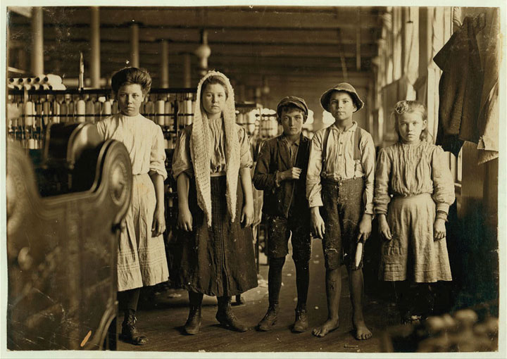

By the turn of the century, every American town with more than a few hundred residents had its own newspaper. A city of 50,000 might have a dozen different newspapers, many of which were owned and operated by recent immigrants and were published in German, Yiddish, Italian, or Greek. There were also newspapers that sought to represent the views of labor unions, African Americans, and various political parties and movements. Nearly every town with at least a few thousand residents had two leading newspapers that were usually directly subsidized by the Republican and Democratic Parties. In addition, many of the leading and nationally circulated newspapers were dominated by a handful of powerful newspaper syndicates. Local papers usually reprinted articles written by these syndicates, which were then distributed through the “wire.” However, the desire to keep and attract subscribers meant that local newspapers were usually willing to publish a variety of viewpoints. In both cases, articles submitted by readers and wire stories distributed by political parties and national syndicates provided much-needed copy for the tens of thousands of understaffed local newspapers. As a result, a well-written editorial might soon appear in a number of newspapers across the nation. A century prior to the widespread use of the Internet to share ideas, ordinary Americans joined professional journalists in broadcasting their opinions through the print media.
Figure 4.13

An artist’s view of railroad monopoly as “The Curse of California.” The railroad appears as an octopus that controls the money and politics of the state while encouraging foreign migration and strangling local businesses and farms.
Progressives seized this medium to spread their ideas. Journalists who sought to expose injustice and corporate malfeasance were known as “muckrakers.” The term itself derived from a speech by President Roosevelt in 1906. Roosevelt described these journalists as armed with a “muckrake” exposing all that was foul and dirty in hopes of motivating others to take action. The president offered both praise and criticism for muckrakers, emphasizing the importance of their work so long as they maintained fidelity to the truth. Many Progressives conducted research to demonstrate the justice of their causes, yet like the caricature of the muckrakerMeant to be a derogative nickname, a “muckraker” was a journalist that sought to uncover corruption and other hidden threats to the well-being of society., they might also become so focused on exposing corruption that they exaggerated its existence. Muckrakers might also conduct research that was calculated to validate a preconceived conclusion and thereby ignore or marginalize facts and perspectives that were contrary to their opinions. Despite the abuses of some muckrakers, the Progressives generally succeeded in exposing dirty secrets of political machines, corporations, and governmental administrations.
Many of the leading muckrakers even published novels intended to bring their observations to a larger audience in hopes of promoting their reform agenda. One of the first muckrakers was California’s Frank Norris, who published a novel called The Octopus: A Story of California in 1901. The Octopus in this West Coast story was a railroad conglomerate that kept raising rates in an effort to force farmers, such as the novel’s protagonist, to sell their land. Like the animal he chose to represent the railroad trust, Norris presented railroad barons as aggressive creatures whose tentacles reached in multiple directions and strangled the independence of ordinary farmers.
New York Tribune reporter Jacob Riis used a different medium to demonstrate the way corporate greed led to the impoverishment of the city. His book, How the Other Half Lives, was first published in 1890 and demonstrated the power of photojournalism. Given the state of photography at this time, Riis had to stage his photos, and his subjects had to hold still for a few seconds. As a result, photos of street toughs robbing children of their factory wages were not quite authentic, even if they did communicate a deeper truth about living conditions in neighborhoods like New York’s infamous Hell’s Kitchen. At the same time, Riis’ subjects often resented the way they were forced to look pitiful to elicit the reader’s emotions. A keen observer can find elements of the agency of Riis’ subjects in much of his work. The same is true of other photojournalists. For example, rural Southerners and Appalachians insisted on wearing their Sunday best in photos meant to depict squalor. As a result, these photos demonstrate both the poverty of the region and the quiet dignity of the laboring people that inhabited these places.
The work of Nellie Bly reflects a similar brand of determination. Bly published Ten Days in a Mad-House, based on her experiences as an inmate at a New York asylum for the insane. After faking insanity and being arrest and interned, Bly documented the inhumane conditions she and others endured within the asylum. Many of her readers were outraged and demanded an official investigation of New York’s Blackwell Island where Bly was kept. As a result, a significant movement to reform prisons and asylums emerged. Ida TarbellA talented researcher and journalist from Pennsylvania who exposed the monopolistic practices of John Rockefeller’s Standard Oil Company. used a less dramatic method, spending years researching court filings and any internal memos she could find regarding the dealings of each company that composed John D. Rockefeller’s mammoth empire. Originally published as a serial within a popular magazine, Tarbell’s The History of the Standard Oil Company was a tour de force that exposed Standard Oil as a monopoly and led to its breakup. A similar expose on US Steel by Ray Stannard Baker was also influential, but it failed to disband the company Andrew Carnegie had formed. Baker is best known for his 1908 book Following the Color Line, which was one of the few efforts by white journalists to document the conditions faced by African Americans during this era.
In 1906, Upton Sinclair published The JungleThe most famous of all muckraking novels, Upton Sinclair’s The Jungle revealed the unsanitary practices of the beef packing industry. The author had hoped his book would inspire readers to challenge the Capitalist system, which he believed exploited the consumers of adulterated beef and also the workers who produced it., the most famous of all muckraking novels and a heartbreaking tale about a resilient Lithuanian immigrant named Jurgis Rudkus. In the novel, Jurgis responds to each injustice within the workplace by resolving to work harder until he finally discovers Socialism, which promises material security and equality. Sinclair had intended the novel to promote Socialism, but the atrocities most readers recalled were those committed against consumers rather than immigrant workers like Jurgis. Sinclair’s protagonist was employed by various meatpackers, and his narrative was packed full of horrific violations of basic sanitation. Most readers missed the political message of the book and remembered only the festering bacteria and vermin that went into the sausage and might also be part of the food they just served their own family. Even today, teachers who receive essays on The Jungle that only focus on the author’s pro-Socialist message can easily discern that the student must not have read the book’s gory description of rats and even human body parts falling into the grinder and becoming part of the tainted sausage Sinclair described.
Figure 4.14

Ida Tarbell was a Progressive journalist who exposed the monopolistic practices of Standard Oil Company. She disliked the term “muckraker” and its pejorative implications. She referred to herself instead as a historian. Her seminal work was titled A History of Standard Oil Company and was based upon Tarbell’s skill in finding and interpreting primary sources to chronicle the history of Rockefeller’s business practices.
Figure 4.15

Many Progressive reformers sought to publicize the unsanitary conditions of beef packing facilities. The small portrait is Reverend J. R. Day, the Chancellor of Syracuse University who presented a different perspective. Day brought attention to the efficiency and economy of the beef industry which made it possible for urban workers to include meat in their daily diets.
The Jungle was published as Progressives were waging a fight for greater regulation of the meatpacking industry. Armed with the public support generated by Sinclair’s book, the government passed the Federal Meat Inspection Act and the Pure Food and Drug ActA 1906 law that enacted federal standards of inspection and sanitation on meatpackers. The law also required drug makers to list ingredients. The law was inspired by a number of muckraking exposés about adulterated foods and dangerous patent medicines. in 1906. The former established guidelines regarding sanitation and required federal meat inspectors to be present at all stages of production. The Pure Food and Drug Act required labels that included all ingredients and would lead to regulations restricting the use of narcotics such as opium and cocaine in medicines. The implications of the Socialist brotherhood Sinclair hoped to promote were largely forgotten. “I aimed at the public’s heart,” Sinclair would later lament, “and by accident I hit it in the stomach.”
Prohibition remained one of the leading causes promoted by middle-class Protestant reformers. The Anti-Saloon LeagueBegan as a local temperance society in Ohio in 1893, the Anti-Saloon League emerged as the leading prohibitionist organization in the country and successfully lobbied for a host of local and state laws banning alcohol by the early twentieth century. was formed in 1893 by a group of religious-minded reformers in Ohio. The League began as a local political organization that would only endorse candidates who had pledged their support for Prohibition. Protestant churches, the Anti-Saloon League, the Women’s Christian Temperance Union, and various local temperance groups were so effective in Ohio that a candidate’s stance on Prohibition became the single leading issue in many elections. The same was true in hundreds of other communities throughout the nation where Protestants utilized the goals and methods of the Progressive Movement, calling on state and local governments to ban the consumption and sale of alcohol.
In many districts throughout rural America, no candidate could win without the endorsement of local prohibition organizations. The movement was especially strong in the Protestant-dominated Bible Belt of the South and the Midwest. By 1905, three states had outlawed alcohol. This number grew to nine states by 1912 and 26 states by 1916. During its 1913 national convention in Columbus, Ohio, delegates celebrated the Anti-Saloon League’s twentieth anniversary by dedicating themselves to the passage of a Constitutional amendment banning alcohol throughout the entire country. The success of the Anti-Saloon League as a political organization meant that few lawmakers who represented the growing number of “dry” states would dare to oppose such a measure.
Prohibition demonstrated the Progressive belief in the idea of “applied Christianity,” known as the Social Gospel MovementA movement that emerged during the early twentieth century that sought to apply the principles of Christianity to alleviate major social problems such as poverty, crime, and child labor. Many adherents of the movement were inspired by minister Charles Sheldon who challenged his followers to ask themselves “What would Jesus do?”. Over 60 percent of Americans were Protestant in the first decades of the twentieth century. Protestant churches led the fight for a number of reforms that sought to influence behavior beyond Prohibition. One of the reasons for the renewed emphasis on Prohibition at this time was concern about the growing number of Catholics, which reached 15 million by 1915. The rise was more the result of increased immigration from southern and central Europe, Mexico, and Latin America. Recent trends in immigration also led to dramatic increases in the numbers of Jews in the US as well as small but growing Hindu, Muslim, and Buddhist communities. Protestants responded by launching a movement to renew their faith and revive missionary zeal through dedication to public welfare.
Figure 4.16

An annual meeting of the Anti-Saloon League in Atlantic City, New Jersey. Like all successful movements in the United States, the strength of the Anti-Saloon League was in local chapters who engaged in grassroots campaigns in support of prohibition.
Adherents to the Social Gospel Movement were inspired by the Charles Sheldon novel In His Steps. This Congregational minister from Topeka, Kansas, challenged his readers to ask themselves “what would Jesus do” when making everyday decisions. The Social Gospel Movement led to a renaissance in charitable efforts and taught that service to the poor was the obligation of those who had been blessed with material wealth. Protestant sects such as the Salvation Army and religious service organizations such as the YMCA and YWCA grew in number and prestige for their emphasis on charitable work. The Social Gospel Movement also motivated campaigns to treat workers more fairly and called into question practices of racial and religious discrimination. At times, the movement also reinforced existing attitudes of paternalism and the uncritical association of poverty with crime and vice. Despite the sometimes paternalistic and condescending attitudes, the urban poor began to return to church in response to the creation of outreach missions in neighborhoods once ignored by the larger Protestant congregations.
Figure 4.17
Young children employed inside a South Carolina textile mill in 1908. These children were often injured by the rapidly moving machinery. In fact, small children were employed as “doffers” specifically for their ability to fit in small spaces and replace bobbins while the machines were operating.
Between Reconstruction and the start of World War I, the percentage of children who regularly attended public schools had more than doubled. The number of public high schools increased from fewer than 100 to more than 6,000 during this same period. Most of these schools focused on the liberal arts, classical languages, and advanced math skills. However, as more and more children attended school, a movement to provide vocational skills emerged with the support of business interests as well as many parental groups. The vocational education movement demonstrated increasing awareness of the value of technical and trade skills in the new industrial economy. Early training programs included courses in scientific agriculture, as well as mechanical and industrial trades. Young women received a different curriculum, largely based on cultivating their skills as homemakers. Colleges also began including courses intended to prepare students for the business world and some specific trades, although the vast majority still focused on the classic model of education based on language, science, and the liberal arts.
Progressives viewed public education as the engine of social mobility. Through public schools and colleges, the children of farmers and common laborers might gain the skills and knowledge that would allow them greater upward mobility. However, the percentage of students attending college remained modest compared to the rapid growth of high schools. College was not an option for most graduates due to the financial difficulty of paying one’s full tuition bill in advance. Progressives responded by funding various scholarship programs, while fraternal associations were able to help a handful of their members’ children attend college.
Other Progressives focused on reforming Native American boarding schools and developing more educational opportunities for the graduates of these institutions. For example, Murray State School of Agriculture (today Murray State College) in Oklahoma operated as both an agricultural and a community college for its predominantly Native American student population. Progressive reformers also worked to reduce the appalling mortality rates at the boarding schools for young Native Americans. Through reform, more children survived away from home due to a variety of commonsense initiatives to better protect health of the students. The decline was also the result of school officials sending sick children home to recover—not only a salubrious measure for the children who were well enough to travel but also one designed to shelter schools officials from blame if the illness proved fatal.
Figure 4.18

Two young women participating in a protest march with signs reading “Abolish Child Slavery” in both Yiddish and English.
The most significant Progressive reforms aimed at improving the lives of the young were those that sought to restrict the employment of school-aged children. Thanks in large part to local anti-child labor organizations, at least a dozen states passed laws limiting child labor in the early 1900s. These laws were not always enforced, but they did help to reduce the number of children killed in industrial accidents. In 1880, over one million children under 16 were part of the paid labor force—a disturbing statistic given that nearly half of the nation’s children lived on farms where their labor was expected but not recorded. By 1900, only 284,000 children under 16 held jobs beyond the home and farm. The result was a dramatic decline in illiteracy. By 1900, less than half a million children were illiterate and states and communities were passing laws making school attendance mandatory for children under various age limits.
Progressives in Illinois passed a law limiting the workday for children aged sixteen and under. However, business interests within Illinois attacked the law as socialistic and had it repealed in 1895. By this time, the reformer Florence KelleyThe first general secretary of the National Consumers League, Florence Kelley was one of the most prominent advocates of anti–child labor laws in the United States. She was also a supporter of a host of other progressive causes such as civil rights and was one of the founding members of the NAACP. had been attracted to Chicago by the work of Jane Addams. Kelley became one of the leading advocates for stronger laws to protect children. She was later appointed by the governor to inspect conditions affecting children who worked in factories throughout Illinois.
Jane Addams and Josephine Lowell founded the National Consumers League (NCL)Founded in 1899 by Josephine Lowell and Jane Addams, the NCL lobbied for anti–child labor laws and urged consumers to boycott products made by child labor. as an advocacy group that sought to end child labor and other abusive practices by informing consumers about the conditions under which certain products had been made. Florence Kelley became the first general secretary of the group and traveled around the nation documenting the conditions of working women and children. She and other NCL leaders also delivered thousands of public lectures. The NCL certified products that were not made by children and urged consumers to only buy items that displayed the NCL label. A group with a similar acronym, the National Child Labor Committee (NCLC) was organized in 1904. This group focused on legislative efforts and lobbied Congress to outlaw child labor. NCLC leaders testified to Congress that 2 million children under the age of sixteen were at work in America’s factories. Other women such as Mary Harris “Mother” Jones led marches of children who displayed banners asking for the opportunity to attend school.
Figure 4.19

Among the most poignant images of the anti-child labor movement are those of very young children holding signs asking for a few hours per week that they might attend school or play with other children.
Efforts to pass federal legislation banning child labor failed until the midst of the Great Depression when Congress agreed that such laws were needed to protect the jobs of adult males. States that passed child-labor laws found that goods made by young children in other states entered their markets. The result was a net loss of local jobs and no discernible reduction in child labor. In 1916, Congress passed a federal law that made it illegal to ship goods that had been made by children under the age of fourteen out of the state. However, this law was voided two years later by the Supreme Court. The court agreed with a North Carolina mill that the law violated the Tenth Amendment, which grants states the authority over matters that are not explicitly mentioned in the Constitution.
Many believed that the only way to truly outlaw child labor was to pass a Constitutional Amendment. In the meantime, Progressive women under the banner of the NCL, NCLC, and other groups lobbied for the creation of the Children’s Bureau as an agency within the Department of Labor. President Taft approved the measure in 1912 and agreed to appoint a woman to the head the new agency out of respect for the efforts of these reformers. Julia Lathrop led the Children’s Bureau for the next decade, using her position and celebrity as the first female head of any federal agency to push for stronger measures to protect children. Other Progressives, such as Harvard professor Alice Hamilton, led investigations that publicized the harmful effects of deadly fumes on the bodies of children who labored in various factories. Still other Progressive women and men documented the conditions faced by children who were employed because of their ability to crawl through narrow mine shafts.
Progressives in Ohio boasted that their law prohibiting boys under the age of sixteen and girls under the age of eighteen from working more than forty-eight hours per week was “the best child-labor law in the United States and probably the world.” In actuality, most industrialized nations had developed much tougher restrictions against child labor than the United States. The Ohio law was passed in 1908, the result of years of activism by Progressives, and came on the heels of a 1906 attempt to pass a law barring children aged fifteen and younger from working more than nine hours per day. Arkansas led the South with a similar law barring child labor, which was passed a few years later.
In the march of time it became necessary to withdraw the children from school, and these machines came to be operated by the deft touch of the fingers of the child.…It is not a question of white labor or black labor, or male labor or female or child labor, in this system; it is solely a question of cheap labor, without reference to the effect upon mankind.
—Eugene Debs in the Socialist newspaper Appeal to Reason, December 1900.
As support for stronger child labor laws grew, the Progressives recognized that one of their chief obstacles to passing these laws was the ability of legislative committees to prevent their measures from reaching the floor for public debate and a recorded vote. As a result, the Progressives directed much of their later efforts toward promoting reforms such as initiative and referendum. Initiative allowed residents to petition their legislature directly, while referendum required that a proposed law be placed on the ballot. Once these democratic initiatives were approved, state legislatures were no longer able to thwart child labor laws and other reforms through inaction. The result was a dramatic increase in anti-child labor laws in the late Progressive Era.
Progressives who sought to create a more ordered world were influenced by business leaders such as Frederick W. TaylorAn engineer from Pennsylvania who advocated “scientific management” of industry, Taylor argued that careful study of every aspect of the production processes could improve efficiency by eliminating unnecessary steps and wasted motions.. Taylor studied the efficiency of steel mills throughout the 1890s, breaking down each of the tasks workers performed into a series of motions. Taylor then analyzed the ways that these motions could be made more efficient. His studies were ridiculed by some business leaders, but others recognized the potential of an idea that became known as “Taylorism”—the theory that scientific study of the production process could reduce wasted time and energy.
Numerous factories paid Taylor and other consultants to study their production processes in hopes of maximizing efficiency. Taylor’s 1911 book The Principles of Scientific Management inspired managers to more strictly regulate the methods workers used. It also led to the speeding up of assembly lines. As a result, workers sometimes felt as if they themselves had become machines. This feeling was especially pervasive when workers were forbidden to leave the assembly line for any reason, including restroom breaks, because their absence would force the assembly line to stop.
The acceptance of Taylor’s theories in business reflected a growing desire to improve the efficiency of organizations through scientific study of operations and by placing experts in charge of management. The same was true of government, especially at the local level where Progressive reformers continued their attack on corruption. Progressives believed that the first key to efficient government was ending the patronage system and awarding jobs to experts. The second step was removing the dictator-like structure of city governments in favor of systems that spread power among specialists who were selected to head specific departments.
Figure 4.20

Debs’s running mate was Emil Seidel, Socialist mayor of Milwaukee. In the early 1900s, two congressmen, scores of state legislators, and more than a hundred mayors representing the Socialist Party were elected. Although the Socialists remained weak on the national level, their ideas were very influential in municipal government.
Progressive reformers studied various examples of local governments as models. The city of Galveston, Texas, had been decimated by a hurricane in September 1900 that cost the lives of an estimated 8,000 people. Relief funds and rebuilding efforts were thwarted by the inefficiency of the city government until the state legislature intervened by appointing a commission of experts to take control. As a result, this important port city quickly recovered. Experts in city planning and civil engineering constructed storm walls and even raised the low-lying parts of the city that had suffered the worst flood damage. As a result, the city withstood a similar hurricane in 1915 with minimal damage or loss of life.
A major flood in Dayton, Ohio, led to the development of another model of civic reform. Rather than adopting the city commission system of Galveston, Dayton replaced the mayor with a city manager who was an expert in the field of urban management. The city manager was appointed by the city council, a provision which assured voter input and accountability. By 1920, over 1,000 cities were utilizing either the city commission system of Galveston or the city manager system of Dayton.
Hundreds of cities took reform even further, leading to public ownership of public utilities. Leading cities in Ohio such as Toledo and Cleveland, along with dozens of other cities, led the way in what has been labeled “municipal socialism.” These city governments built or took control of existing streetcar lines and public utilities. They also created publicly owned water, sewer, and sanitation departments. Milwaukee mayor Emil Seidel was the first of many mayors elected on the Socialist ticket in 1910. Under his administration, Milwaukee developed new departments for public works and city parks. Reforms for municipal electric plants faced larger obstacles, although city and state governments became active in encouraging development of generating stations and distribution systems that would provide their residents with low-cost electricity. Although the idea of direct government ownership in other industries attracted few adherents, the benefits of publicly owned utility companies led many cities to engage in similar programs.